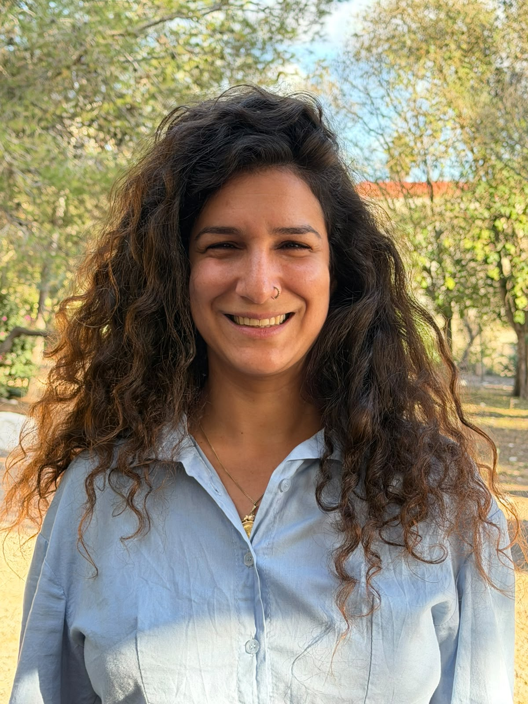

PREMIER ÉCHANGE · פגישת היכרות
Rencontre
découverte
Faire connaissance et choisir l’accompagnement qui vous correspond
פגישת היכרות והתאמה למסלול ליווי
20 min · Gratuit | 20 דקות · חינם
Annabelle Memmi · אנאבל ממי
מלווה עולים מצרפת בהשתלבות, בחום ובהתאמה אישית. עליתי בעצמי לישראל כילדה עם המשפחה שלי, ואני מכירה את הדרך, את המכשולים ואת ההלם מהפערים במנטליות.
J’accompagne les olim de France dans leur intégration, avec bienveillance et sur mesure. Arrivée moi-même en Israël enfant avec ma famille, je connais ce chemin, ses obstacles et le choc des différences de mentalité.